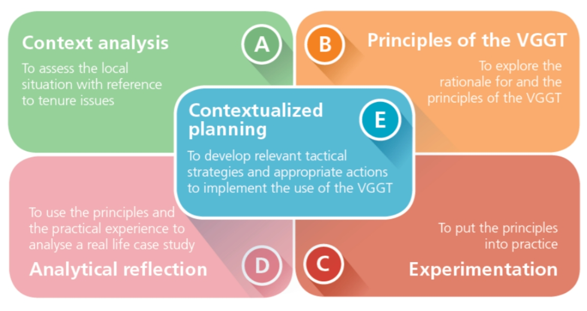

CINCO ELEMENTOS DE LA METODOLOGIA
La metodología de esta capacitación se ha diseñado sobre la base de un ciclo de aprendizaje de enfoque experiencial modificado, en el cual el proceso de aprendizaje parte de las experiencias de los participantes y gradualmente desarrolla
su conocimiento a través de cinco elementos principales (cada elemento alimenta el siguiente). Además, ha sido diseñado de forma modular, donde los entrenadores pueden seleccionar los elementos específicos que necesitan.

Los 5 elementos anteriores alimentan el objetivo general de la capacitación: permitir que las OSC y sus integrantes utilicen las Directrices Voluntarias de manera significativa y efectiva para mejorar la gobernanza de la tenencia.
Haga clic en cada elemento para descubrir más
The content of your modal.
Análisis del contexto: Esta es la base de toda la capacitación, sobre la cual se fundamentarán todos los otros elementos. Los participantes comparten casos relacionados con la tenencia que conocen, o que han experimentado,
y que representan un desafío para ellos y sus comunidades. Una vez que todos los participantes hayan compartido sus casos, seleccionarán en el plenario dos o tres casos que representen mejor los principales desafíos de tenencia de
su país.
Principios de las Directrices: Tras haber analizado el contexto, los participantes explorarán la argumentación y los principios de las Directrices, lo que reforzará su conocimiento sobre cómo pueden recibir apoyo de las
Directrices en la aplicación de una gobernanza responsable de la tierra, la pesca y los bosques en el contexto local.
Experimentación: En este elemento, los participantes ponen los principios en práctica al aplicar directamente en situaciones de juego de roles lo que han aprendido
Reflexión analítica: A través de la reflexión analítica, los participantes adquieren un entendimiento común sobre la gobernanza de la tenencia en su país. Luego, utilizan los Principios de las Directrices Voluntarias y
su experiencia práctica para analizar los estudios de casos que han seleccionado en el análisis del contexto.
Planificación contextualizada: Porúltimo, los participantes tendrán la oportunidad de contextualizarlo que han aprendido sobre su situación y desarrollar un plan deacción adaptado a su movimiento u organización.